（本ページに掲載されているスクリーンショットは，マイクロソフトの許諾を得て使用しています．）
Visual Studioの設定
Windows編
Visual Studio 2019を用いる．Eto.Formsの拡張機能は令和4年3月24日(木)時点ではまだVisual Studio 2022に対応していない．
Visual Studioを起動し，メニューバーが表示されている状態にする（たとえば，スタート画面から「コードなしで続行」する）．
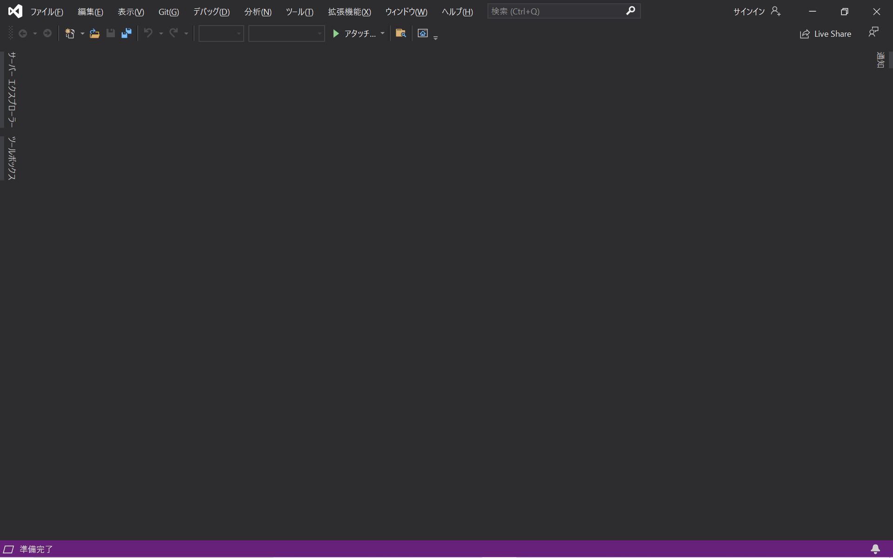
メニューの「拡張機能」以下の「拡張機能の管理」を開く．
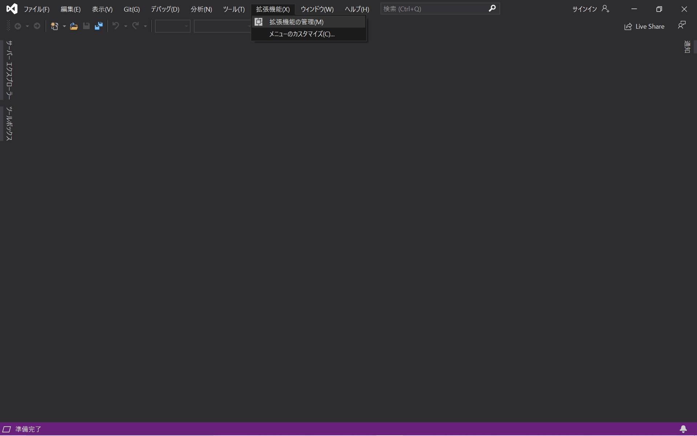
すると拡張機能の管理ウィンドウが表示されるので，右上の検索窓から”Eto.Forms”を検索する．すると，”Eto.Froms Visual Studio Addin”がリストされるので， 「ダウンロード」する．
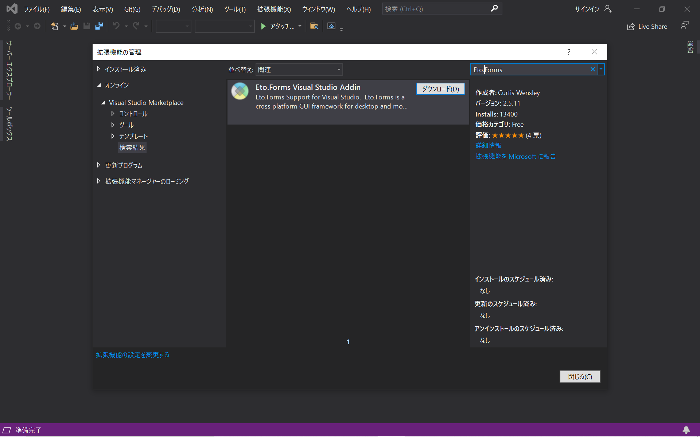
すると，「変更内容がスケージュールされます。すべての Microsoft Visual Studio ウィンドウを閉じると変更が開始されます。」と 表示されるので，一旦Visual Studioを終了させる．
その後，以下のウィンドウが表示されるので，「Modify」を選択する．
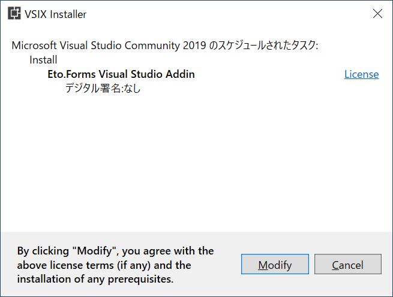
Visual Studioを再度立ち上げる．正しくインストールできていると，「新しいプロジェクト」作成時のテンプレート選択画面で「Eto.Forms Application」が選べるようになる．
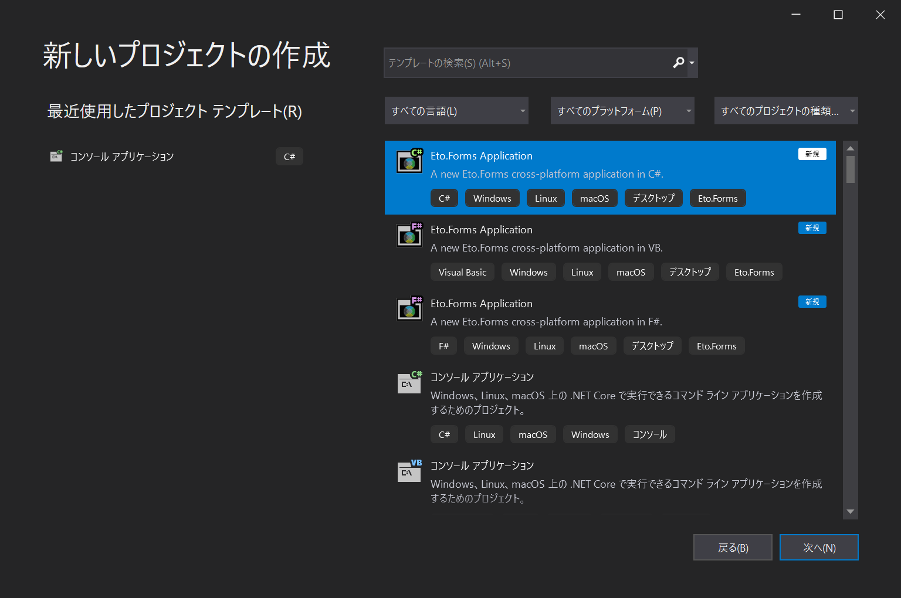
動作確認ついでに「続行」からプロジェクトを作成してみよう．例のごとくプロジェクト名とソリューション名は適当でよい（
HelloEtoとする）．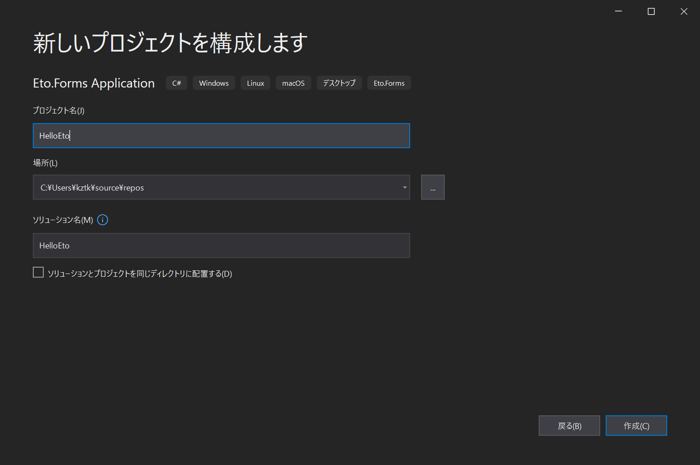
プロジェクト名とソリューション名を入力後，以下のウィンドウが表示されるがこれは何も変更しなくてよい．
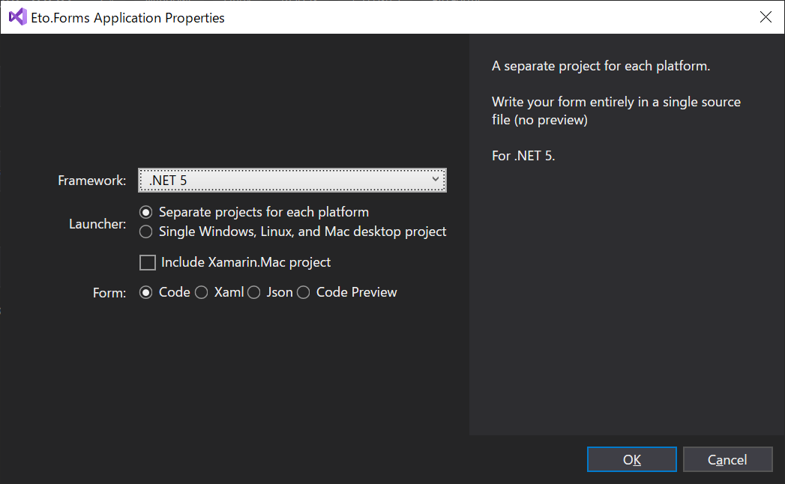
作成すると，
HelloEtoの他にHelloEto.Mac，HelloEto.Gtk，HelloEto.Wpfというプロジェクトが作成されていることがわかる． 演習ではHelloEto（に相当するフォルダ）以下のMainForm.csを編集することになる． ここでは，HelloEto.Wpfをビルド・実行する．（HelloEto.MacはビルドできるがWindowsで実行できない．HelloEto.Gtkもビルドできるが実行にGTKのインストールが必要）．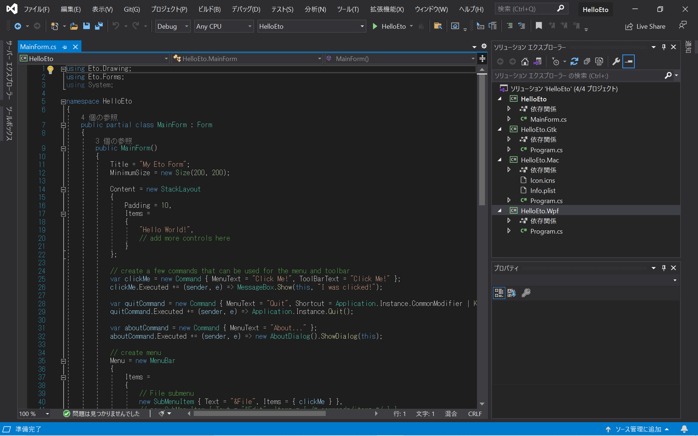
▶ボタンの左の枠から「HelloEto.Wpf」を選ぶ．選択後，右のソリューションエクプローラーで同プロジェクトが太字になる．
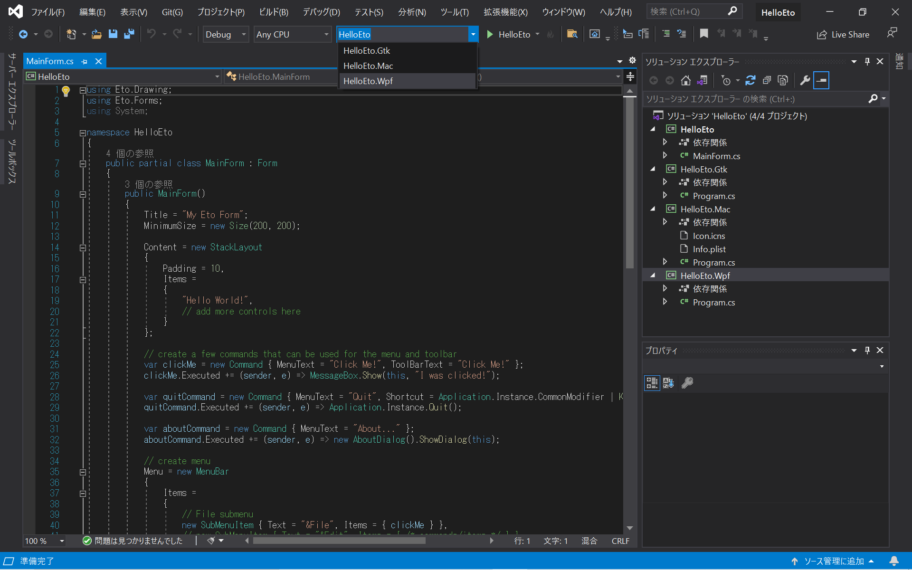
▶ボタンを押すと，以下のウィンドウが表示される．
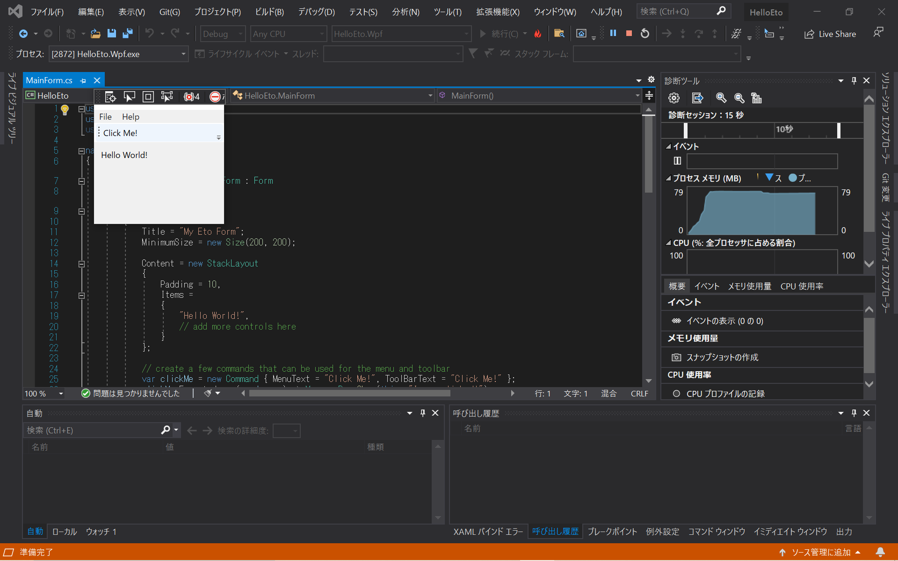
いつものようなウィンドウタイトルや閉じるボタンが表示されていないように見えるかもしれないが， ウィンドウを拡大したら隠れていただけであったことがわかる．黒いパネルはVisual Studio由来であり，実際にコマンドラインからビルド・実行すると表示されない．
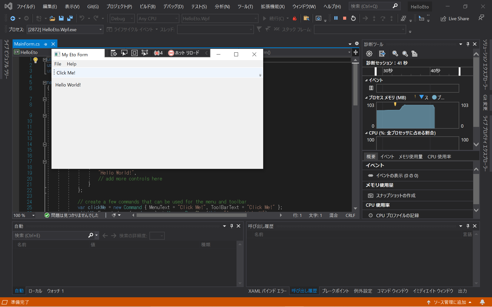
“Click Me!”と書かれた部分をクリックするとダイアログが表示される．
ウィンドウ右上の閉じるボタンか，Ctrl + Q を押すか，メニューからQuitを選択してプログラムを終了する．
Mac編
Eto.Fromのリリースページ から，
Eto.Addin.VisualStudio.Mac-X.X.X.mpackの最新版を入手する． 令和4年3月23日(水)時点での最新版はEto.Addin.VisualStudio.Mac-2.6.1.mpack．メニューの「Visual Studio」以下の「Extensions…」（または「拡張機能…」）を開く．
ウィンドウが出てくるので，「ファイルからインストール…」を選び，先程のダウンロードした.mackファイルを選択する．
すると，「次のパッケージがインストールされます」と出てくるので，「install」をクリックしインストールする．
Visual Studio を再起動する．
正しくインストールできていると，「新しいプロジェクト」作成時のテンプレート選択画面で「Multiplatform」（あるいは「マルチプラットフォーム」）以下から「Eto Application」が選べるようになる．
動作確認ついでに「続行」からプロジェクトを作成してみよう．例のごとくプロジェクト名とソリューション名は適当でよい（
HelloEtoとする）．作成すると，
HelloEtoの他にHelloEto.Mac，HelloEto.Gtk，HelloEto.Wpfというプロジェクトが作成されていることがわかる． 演習ではHelloEto（に相当するフォルダ）以下のMainForm.csを編集することになる． このうち，HelloEto.WpfはMac版のVisual Studioではビルドできない．ここでは，動作確認のためにHelloEto.Macを（GTKをインストールするのであればHelloEto.Gtkも）実行してみよう．Caution
Microsoftの著作物利用のガイドラインを見ると， Visual Studio 2022 for Macはまだ正式リリース前なのでスクリーンショットを掲載できないようである． このプロジェクトの作成以降は Visual Studio 2019 for Mac を用いたので問題がない…わけではないがなんとかなりはするので， 代わりにVisual Studio 2019 for Macのスクリーンショットを用いて説明する．画面の構成に大きく違いがあれば都度述べる．
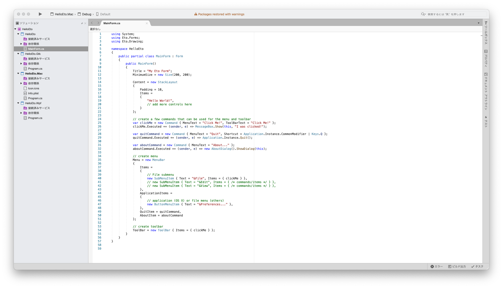
- HelloEto.Mac
▶ボタンの右に「HelloEto.Mac」が表示されていなければ，その部分をクリックして「HelloEto.Mac」を選択する．左の「ソリューション」の部分で，プロジェクト名「HelloEto.Mac」が太字になっていることを確認する．
ここで，Visual Studio 2022 for Mac Previewにおいては▶ボタンがかなづちボタンになっていることに気付くかもしれない． これは，Visual Studioはビルドしかせず，実行してくれないことを表している． （Visual Studio 2019 for Macだと「▶」のままだが，同様の問題がある．） 実行するには設定が必要になる．
Note
少なくとも私（松田）の環境においてVisual Studio 2019 for Macのバージョン 8.10.21 (build 4)ではそもそもビルドに失敗する． この問題の一番簡単なワークアラウンドは，Visual Studio 2022 for Mac PreviewやVSCode等を使うことだが， プロジェクトファイルを修正することでもVisual Studio 2019 for Macでもプロジェクトをビルドできるようになる（Thanks, Curtis Wensley氏）．
具体的には
プロジェクト名.Mac以下にあるプロジェクト名.Mac.csprojを以下に述べる通りに編集する（Visual Studio上では，プロジェクトを 右クリックして，コンテキストメニューから「プロジェクト ファイルの編集」を選ぶことで編集できる）．おそらく行頭にある
<Project Sdk="Microsoft.NET.Sdk">を
<Project Sdk="Microsoft.NET.Sdk" TreatAsLocalProperty="UseAppHost">のように変更し，その直下にある
<PropertyGroup> <OutputType>Exe</OutputType> <!-- 中略 --> </PropertyGroup>の部分に
<PropertyGroup> <OutputType>Exe</OutputType> <!-- 中略 --> <UseAppHost>True</UseAppHost> </PropertyGroup>と
<UseAppHost>True</UseAppHost>を追加する．Note
生成された実行形式を起動するには，生成された.appファイルをopenするか，その中の実行ファイルを実行する必要がある ． この点は
dotnetを用いる場合でも同様である．左の「ソリューション」の
HelloEto.Macの部分をダブルクリックすると，プロジェクトオプション編集用ウィンドウが表示される． 「実行」>「構成」>「Default」の項目から，「開始アクション」の「外部プログラムの開始」に以下を入力する（.appの中身なので，「…」ボタンからは選択できない）．bin/Debug/net5.0/HelloEto.Mac.app/Contents/MacOS/HelloEto.Mac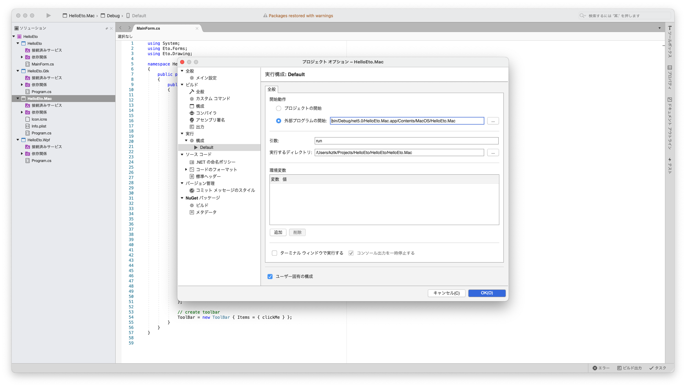
（スクリーンショットはVisual Studio 2019 for Macのもの．Visual Studio 2022 for Mac Previewだとこのパネルのデザインが多少異なる．） この変更は一回行うのみでよい．
Note
Visual Studio 2019 for Macだと絶対パスでないとうまくいかないようだったが， 上記のように相対パスを入力してもVisual Studio 2022 for Mac Previewで一度実行に成功してからは， Visual Studio 2019 for Mac上でも実行に成功するようになった．
詳しい情報がわかれば追記するが，Visual Studio 2022 for Macの正式版が出るほうが先になるかもしれない．
しばらく待つと，Eto.Formsのアイコン（テンプレート選択画面で表示される円の中に菱形のもの）のアプケーションが起動していることが確認できるので， アイコンをクリックするなりしてフォーカスをそのアプリケーションに写す．
以下のようなウィンドゥが表示される．

ツールバー上のボタン「Click Me!」は初期ウィンドゥサイズだと隠れてしまっている．拡張して表示しよう．

「Click Me!」の上の部分にマウスポインタを持ってくると，色が変わる部分があるのでそこをクリックするとダイアログが表示される．
- 「Click Me!」自体はクリックできない．

Command + Q を押すか，メニューからQuitを選択してプログラムを終了する．
Caution
ウィンドウ左上の閉じるボタンはプログラムを終了させない．この挙動はMacの一般的なアプリケーションプログラムと同様である．
- HelloEto.Gtk
GTKをインストールする（参考：GTKのインストール）
▶ボタンの右に「HelloEto.Gtk」が表示されていることを確認する．そうでなければ，その部分をクリックして「HelloEto.Gtk」を選択する． 左の「ソリューション」の部分で，プロジェクト名
HelloEto.Gtkが太字になっていることを確認する．しばらく待つと，「実行形式ファイル」アイコンのアプケーションが起動していることが確認できるので，アイコンをクリックするなりしてフォーカスをそのアプリケーションに写す．
以下のようなウィンドゥが表示される．
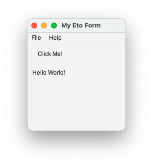
“Click Me!”と書かれたボタンをクリックするとダイアログが表示される．
ウィンドウ左上の閉じるボタンか，Ctrl + Q を押すか，メニューからQuitを選択してプログラムを終了する．
- HelloEto.Mac
コマンドライン環境の設定
WindowsだとPowerShell，Macだと適当な仮想端末アプリケーション（Terminal.app）を使って以下を実行する．
以下を行う（設定自体はこれで終わり）．
dotnet new -i "Eto.Forms.Templates::*"確認のために以下を実行してみる．
dotnet new -l etoたとえば，以下のように表示されるはず．
これらのテンプレートは、入力: 'eto' と一致しました テンプレート名 短い名前 言語 タグ ------------------------- -------- ---------- ------------------ Eto Application etoapp [C#],F#,VB Cross Platform/Eto Eto Panel, Dialog or Form etofile [C#],F#,VB Cross Platform/Eto動作確認
適当なディレクトリに移動し，その下に適当な名前のディレクトリを作成する（
HelloEtoとする）mkdir HelloEto作成したディレクトリに移動する．
cd HelloEto以下を実行するを実行する．
dotnet new etoappその後
lsしてみると以下のようなディレクトリが生成されたのがわかる（Windowsだとlsはdirの別名なので表示は異なる）．$ ls HelloEto/ HelloEto.Gtk/ HelloEto.Mac/ HelloEto.Wpf/
- buildおよび実行してみる．
Windowsの場合，まず以下を実行しプロジェクトHelloEto.Wpfをビルドする．
dotnet build HelloEto.Wpfその後以下のコマンドでビルドしたプログラムを実行する．
dotnet run --project HelloEto.WpfNote
Mac環境だと .Wpf版はビルドできない．
Macの場合，まず以下を実行しプロジェクトHelloEto.Macをビルドする．
dotnet build HelloEto.Macその後以下のコマンドでビルドしたプログラムを実行する（net5.0の部分は対象のフレームワークによって異なる）．
open HelloEto.Mac/bin/Debug/net5.0/HelloEto.Mac.appCaution
dotnet run --project HelloEto.Macでは実行に失敗する．Note
Windows環境だと，.Mac版はビルドできるが実行できない．
GTKがインストールされているのならば（参考：GTKのインストール），GTK版をビルド・実行してみるのもよい． まず，以下を実行しビルドする．
dotnet build HelloEto.Gtkつぎに，以下を実行しビルドしたプログラムを実行する．
dotnet run --project HelloEto.Gtk
GTKのインストール
オプショナル．Macだとdotnet runで実行できないのが面倒だし，遅かれ早かれbrewは入れることになると思うので，インストールするのがよいかもしれない．
Windows環境については情報収集中．
Mac
- Homebrew をトップページに書いてあることに従いインストールする．
- ターミナルから
brew install gtk+3を実行するbrew updateも必要かもしれない